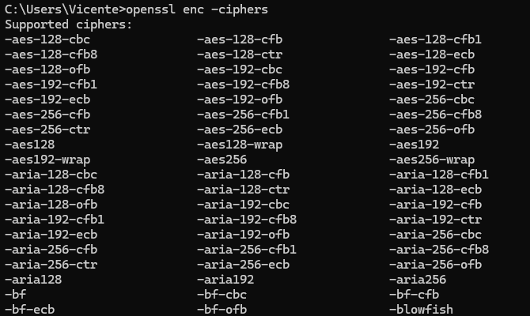

SAD - U2.2. Criptografía Simétrica
Índice
1. Criptografía Simétrica

Los algoritmos de cifrado simétrico, o clave privada, utilizan la misma clave para encriptar y desencriptar datos. Los algoritmos implementan el conjunto de las operaciones matemáticas necesarias para encriptar un texto plano, o desencriptar un texto cifrado, utilizando una clave simétrica.
Si bien las implementaciones de software piden una contraseña de cifrado, no se utiliza dicha contraseña directamente. Generan una clave de cifrado de determinada cantidad de bits utilizando de base la contraseña provista, y una función de derivación de clave.
Así, si Ana quiere encriptar un dato:
- Introduce su contraseña.
- Se crea una clave de cifrado derivada de dicha contraseña.
- Se usa dicha clave para encriptar los datos.
Anaenvía los datos cifrados a Bob.Bobtoma el dato cifrado, introduce la misma contraseña.- La función de derivación de clave genere la misma clave que
Ana. - Se utiliza esta clave en el algoritmo para desencriptar el dato.
Warning
Ahora bien, las primitivas de encriptación y de desencriptación pueden o no ser las mismas.
Esto significa que el algoritmo de encriptación puede ser diferente al de desencriptación, pero ambos deben ser capaces de trabajar con la misma clave.
| Ventajas | Inconvenientes |
|---|---|
| Son rápidos y eficientes. | Exigen una clave diferente por cada pareja de interlocutores (el espacio de claves se incrementa enormemente conforme aumentan los interlocutores). |
| Resultan apropiados para el cifrado de grandes volúmenes de datos. | Requiere un control estricto sobre el intercambio seguro de la clave entre el emisor y el receptor. |
| Son vulnerables a ataques por fuerza bruta, por lo que la fortaleza de la clave es fundamental. |
1.1. Criptografía simétrica de flujo
Supongamos que queremos cifrar la palabra balmis utilizando la clave 0123. Para ello necesitamos un algoritmo de cifrado. En este caso, supongamos que el algoritmo de cifrado, es decir, el conjunto de tareas que toma un texto plano de entrada, y una clave simétrica, y devuelve un texto cifrado, es la realización de la operación XOR entre los bits del texto plano y de la clave.
En nuestro caso, si traducimos los caracteres ASCII de la palabra balmis a su representación hexadecimal para facilitar la operación de bits, obtenemos lo siguiente:
ASCII: b a l m i s
Hexa: 62 61 6C 6D 69 73
Si hacemos lo mismo con la clave:
ASCII: 0 1 2 3
Hexa: 30 31 32 33
Ahora, procedemos a hacer el XOR entre cada valor hexadecimal.
Como la clave es más corta que la cadena, vamos a repetirla hasta completar el texto plano:
Texto plano: balmis
Hexa balmis: 62 61 6C 6D 69 73
Hexa key "0123": 30 31 32 33 30 31
Resultado XOR: 52 50 5E 5E 59 42
ASCII cifrado: R P ^ ^ Y B
En este caso, la cadena cifrada que le envía Ana a Bob sería RP^^YB.
Ahora, veamos cómo descifrar el texto y obtener el mensaje original.
En este caso particular, el algoritmo de cifrado, XOR, es simétrica (no confundir con el concepto de criptografía simétrica en general), por lo que utilizaremos el mismo algoritmo para descifrar el contenido. Hagamos la prueba:
Texto cifrado: R P ^ ^ Y B
Hexa cifrado: 52 50 5E 5E 59 42
Hexa key "0123": 30 31 32 33 30 31
Resultado XOR: 62 61 6C 6D 69 73
ASCII descifrado: b a l m i s
A este tipo de algoritmos, que cifran pequeñas porciones de dato, como ser bytes, o words, se los denomina cifradores de flujo o de stream.
Entre los algoritmos de cifrado simétrico de stream más conocidos se encuentran RC4, y Salsa20 y Chacha. En general se trata de algoritmos más eficientes que los de bloque. Igualmente, por su forma de trabajo, suelen ser más propensos a ataques, por ejemplo, RC4 hoy se considera obsoleto.
Función simétrica
Hemos utilizado la misma clave para cifrar el texto plano y para descifrar el texto cifrado.
Además, las primitivas de encriptación y desencriptación de este algoritmo son la misma: la operación XOR.
XOR es una función simétrica (no confundir con el concepto de criptografía simétrica en general), por lo que permite utilizar el mismo algoritmo para las dos operaciones.
1.2. Criptografía simétrica de bloque
Existen otro tipo de cifradores simétricos que, en lugar de encriptar un flujo continuo de bits, dividen los datos en bloques de igual tamaño y los encriptan obteniendo bloques cifrados que luego se utilizarán para componer el texto cifrado.
En este caso el texto cifrado se genera encriptando bloques de tamaño fijo del texto plano. Los tamaños comunes de bloque son 128b, 256b, 384b, y 512b.
Estos cifradores generan, a partir de una contraseña y una función de derivación de clave, una clave del tamaño necesario para encriptar un bloque de datos. El tamaño de la clave, así, depende del tamaño del bloque seleccionado.

Donde cada bloque de texto plano (M1, M2, …) genera texto cifrado (C1, C2, …) mediante el uso de un algoritmo de encriptación (E) y una clave simétrica. En la imagen de la derecha podemos ver el proceso con el algoritmo de desencriptación (D).
Los algoritmos de cifrado simétrico de bloque más conocidos son AES, DES, 3DES, Twofish, y Blowfish.
- AES (Advanced Encryption Standard) es un estándar de criptografía industrial. Ofrece tres tipos de longitudes de claves: 128, 192 y 256 bits.
- Camellia Desarrollado en Japón, crea claves de 128, 192 y 256 bits. Es utilizado por TLS.
- Triple DES Diseñado para agrandar el largo de la clave sin necesidad de cambiar el algoritmo Data Encryption Standard (DES), tarjetas de crédito y otros medios de pago electrónicos tienen como estándar el algoritmo Triple DES pero está desapareciendo lentamente, siendo reemplazado por AES que es hasta 6 veces más rápido.
- Twofish El tamaño de bloque en Twofish es de 128 bits y el tamaño de clave puede llegar hasta 256 bits. Es rápido, flexible y eficiente y es utilizado en las herramientas de gestión de contraseñas y sistemas de pago seguros.
Estos cifradores suelen encadenar las operaciones de cifrado/descifrado de bloques de tal forma que se dificulte el trabajo a un atacante. Esta manera de encadenamiento se denomina modo de operación del algoritmo.
Cada uno de estos modos poseen sus ventajas y desventajas, algunos son paralelizables mientras que otros no, algunos carecen de difusión (propiedad criptográfica) y otros no, etc.
ECB (Electronic Code Book)
En este modo, cada bloque de texto plano se encripta de forma independiente. Es decir, el primer bloque de texto plano se encripta con la clave y se obtiene un bloque de texto cifrado, el segundo bloque de texto plano se encripta con la misma clave y se obtiene un segundo bloque de texto cifrado, y así sucesivamente.
Este modo es muy sencillo de implementar, pero presenta un problema: si dos bloques de texto plano son iguales, los bloques de texto cifrado resultantes también lo serán. Esto puede ser aprovechado por un atacante para obtener información sobre el texto plano.


|

|

|
Difusión
Se dice que este método carece de difusión. La difusión es una propiedad de los algoritmos criptográficos que implica modificar la mayor cantidad posible de bits del texto cifrado al cambiar un bit del texto plano.
CBC (Cipher Block Chaining)
En este modo, cada bloque de texto plano se encripta con el bloque de texto cifrado anterior. Es decir, el primer bloque de texto plano se encripta con la clave y se obtiene un bloque de texto cifrado, el segundo bloque de texto plano se encripta con la clave y se obtiene un segundo bloque de texto cifrado, pero antes de encriptar este segundo bloque, se realiza una operación XOR entre el segundo bloque de texto plano y el primer bloque de texto cifrado.
Este modo es más seguro que el modo ECB, ya que no se pueden obtener patrones en el texto cifrado. Además, es más difícil de paralelizar, lo que dificulta el trabajo de un atacante.

Note
La ventaja de este modo (y de todos los demás) es que genera diferentes bloques cifrados para dos bloques de texto plano iguales, lo que incrementa la difusión del algoritmo.
Como desventaja, la encriptación en este modo no es paralelizable, por lo que el procesamiento es secuencial.
CFB (Cipher Feedback)
En este modo, el cifrador se utiliza como un generador de secuencia de bits. El cifrador se inicializa con la clave y se encripta un bloque de texto plano. El resultado se encripta de nuevo con la clave y se obtiene un bloque de texto cifrado. Este bloque de texto cifrado se utiliza para encriptar el siguiente bloque de texto plano.
Este modo es muy similar al modo CBC, pero en lugar de encriptar el bloque de texto plano, se encripta el bloque de texto cifrado anterior.

Otros modos
Existen otros modos de operación, como OFB (Output Feedback), CTR (Counter), GCM (Galois/Counter Mode), XTS (XEX-based tweaked-codebook mode with ciphertext stealing), entre otros.
Cada uno de estos modos posee sus ventajas y desventajas, algunos son paralelizables mientras que otros no, algunos carecen de difusión (propiedad criptográfica) y otros no, etc.
Podemos ver un extracto de los modos de operación de los cifradores de openssl en la siguiente imagen:

Cifradores simétricos
Actividad U2.1: Calcula cuantas claves necesitan intercambiar un grupo de cuatro personas que se quieran enviar correos electrónicos cifrados entre ellas, tanto para el caso de utilizar criptografía simétrica como asimétrica. ¿Y si el grupo lo conforman seis personas? ¿Y si son mil?
Actividad U2.2: Investiga sobre los cifradores simétricos más utilizados en la actualidad. ¿Qué algoritmos son los más seguros? ¿Qué algoritmos son los más rápidos? ¿Qué algoritmos son los más eficientes? ¿Qué tamaño de clave permite cada uno de ellos? ¿Cuál es su principal uso?
Crea una tabla comparativa con los resultados obtenidos.